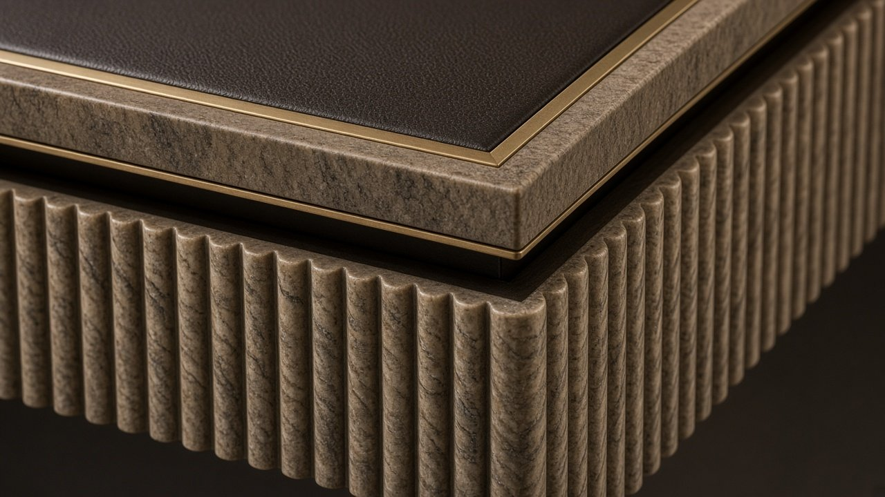
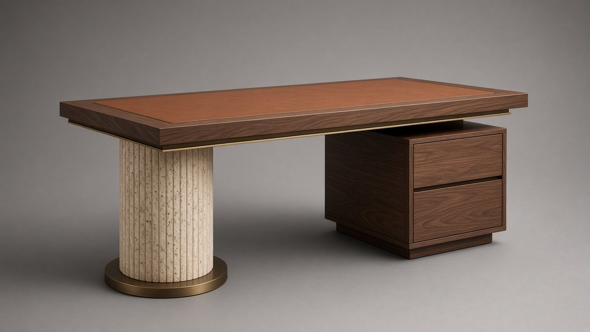

x.classList.remove('on'));this.classList.add('on')">
x.classList.remove('on'));this.classList.add('on')">← Coleção
N.º 05 · Coleção Meridiano
VOUGA
Secretária executiva
A irmã quente da SADO: coluna canelada de travertino sobre bronze, nogueira e pele Conhaque.
Preço desde 17.000 €sem IVA · valor indicativo · versões por medida sob consulta
Descarregar ficha técnica (PDF)
Dimensões
| L × P × A | 2400 × 1000 × 750 mm |
| Superfície de escrita | 1200 × 540 mm |
| Altura útil | 710 mm |
Materiais
| Tampo | Nogueira americana |
| Pele | Plena flor semi-anilina Conhaque |
| Coluna / base | Travertino canelado |
| Pedestal | Nogueira canelado |
| Metais | Latão e bronze escovados |